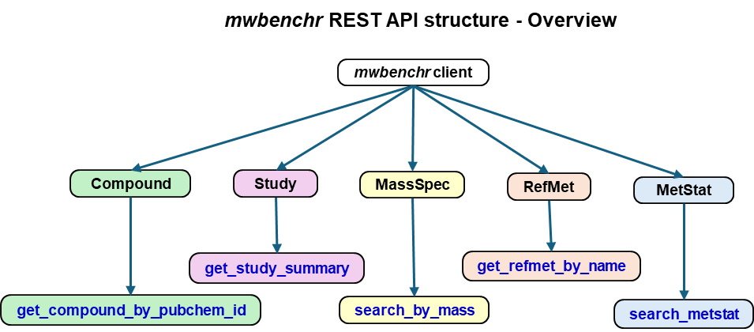

mwbenchr API Schema Documentation
Overview
This document provides a complete schema of all mwbenchr
functions, their parameters, return types, and the underlying REST API
endpoints they access.

Function Categories
mwbenchr
├── Client Management
│ ├── mw_rest_client()
│ └── print.mw_rest_client()
├── Study Functions
│ ├── get_study_summary()
│ ├── get_study_factors()
│ ├── get_study_metabolites()
│ └── get_study_data()
├── Compound Functions
│ ├── get_compound_by_regno()
│ ├── get_compound_by_pubchem_cid()
│ ├── get_compound_classification()
│ └── download_compound_structure()
├── RefMet Functions
│ ├── get_refmet_by_name()
│ ├── standardize_to_refmet()
│ └── get_all_refmet_names()
├── Search Functions
│ ├── search_metstat()
│ └── search_by_mass()
├── Mass Spectrometry
│ └── calculate_exact_mass()
└── Utilities
├── response_to_df()
├── flatten_entry()
└── list_endpoints()1. Client Management
mw_rest_client()
Purpose: Initialize REST client for API interactions
Parameters:
mw_rest_client(
base_url = "https://www.metabolomicsworkbench.org/rest", # Character
cache = FALSE, # Logical
cache_dir = tempdir(), # Character
timeout = 30 # Numeric
)Returns: S3 object of class
"mw_rest_client"
Structure:
├── base_url : Character - API base URL
├── cache : Logical - Caching enabled?
├── cache_dir : Character - Cache directory path
└── timeout : Numeric - Request timeout (seconds)REST Endpoint: N/A (local object creation)
2. Study Functions
get_study_summary()
Purpose: Retrieve study metadata and summary information
Parameters:
get_study_summary(
client, # mw_rest_client object
study_id = "ST", # Character - Study ID or "ST" for all
format = "json" # Character - "json" or "txt"
)REST Endpoint:
GET /study/study_id/{study_id}/summary[/{format}]
Returns: - JSON format: Tibble with columns:
├── study_id : Character
├── study_title : Character
├── study_type : Character
├── institute : Character
├── department : Character
├── last_name : Character
├── first_name : Character
├── email : Character
├── phone : Character
├── submit_date : Character (YYYY-MM-DD)
├── study_summary : Character
└── [additional metadata columns]- TXT format: Character string
get_study_factors()
Purpose: Get experimental design factors (sample metadata)
Parameters:
get_study_factors(
client, # mw_rest_client object
study_id # Character - Study ID
)REST Endpoint:
GET /study/study_id/{study_id}/factors
Returns: Tibble with experimental factors
get_study_metabolites()
Purpose: Get list of metabolites measured in a study
Parameters:
get_study_metabolites(
client, # mw_rest_client object
study_id # Character - Study ID
)REST Endpoint:
GET /study/study_id/{study_id}/metabolites
Returns: Tibble with metabolite information
├── metabolite_id : Character
├── metabolite_name : Character
├── refmet_name : Character
├── pubchem_cid : Character
├── kegg_id : Character
├── other_id : Character
├── other_id_type : Character
└── ri : Numeric (retention index)
get_study_data()
Purpose: Get complete data matrix for a study
Parameters:
get_study_data(
client, # mw_rest_client object
study_id # Character - Study ID
)REST Endpoint:
GET /study/study_id/{study_id}/data
Returns: Tibble with metabolite data across samples
├── study_id : Character
├── analysis_id : Character
├── analysis_summary : Character
├── metabolite_name : Character
├── metabolite_id : Character
├── refmet_name : Character
├── units : Character
└── [sample columns] : Numeric - One column per sample3. Compound Functions
get_compound_by_regno()
Purpose: Retrieve compound information by registry number
Parameters:
get_compound_by_regno(
client, # mw_rest_client object
regno, # Character/Numeric - Registry number
fields = "all", # Character - Fields to return
format = "json" # Character - "json" or "txt"
)REST Endpoint:
GET /compound/regno/{regno}/{fields}[/{format}]
Available Fields: “all”, “name”, “systematic_name”, “formula”, “pubchem_cid”, “inchi_key”, “smiles”
Returns: Tibble with compound information
├── regno : Character
├── name : Character
├── systematic_name : Character
├── formula : Character
├── pubchem_cid : Character
├── inchi_key : Character
├── smiles : Character
├── iso_smiles : Character
└── [additional fields depending on 'fields' parameter]
get_compound_by_pubchem_cid()
Purpose: Retrieve compound information by PubChem CID
Parameters:
get_compound_by_pubchem_cid(
client, # mw_rest_client object
cid, # Character/Numeric - PubChem CID
fields = "all", # Character - Fields to return
format = "json" # Character - "json" or "txt"
)REST Endpoint:
GET /compound/pubchem_cid/{cid}/{fields}[/{format}]
Returns: Same structure as
get_compound_by_regno()
get_compound_classification()
Purpose: Get taxonomic classification hierarchy for a compound
Parameters:
get_compound_classification(
client, # mw_rest_client object
id_type, # Character - "regno", "pubchem_cid", etc.
id_value # Character/Numeric - Identifier value
)REST Endpoint:
GET /compound/{id_type}/{id_value}/classification
Returns: Tibble with classification hierarchy
├── kingdom : Character
├── super_class : Character
├── class : Character
├── sub_class : Character
├── direct_parent : Character
└── molecular_framework : Character
download_compound_structure()
Purpose: Download molecular structure files
Parameters:
download_compound_structure(
client, # mw_rest_client object
id_type, # Character - Identifier type
id_value, # Character/Numeric - Identifier value
format = "molfile" # Character - "molfile" or "sdf"
)REST Endpoint:
GET /compound/{id_type}/{id_value}/{format}
Returns: Character string containing structure file content
4. RefMet Functions
get_refmet_by_name()
Purpose: Get RefMet information for a metabolite
Parameters:
get_refmet_by_name(
client, # mw_rest_client object
name, # Character - RefMet name
fields = "all" # Character - Fields to return
)REST Endpoint:
GET /refmet/name/{name}/{fields}
Available Fields: “all”, “name”, “formula”, “exactmass”, “pubchem_cid”, “inchi_key”, “smiles”
Returns: Tibble with RefMet information
├── refmet_name : Character
├── formula : Character
├── exactmass : Numeric
├── pubchem_cid : Character
├── inchi_key : Character
├── smiles : Character
├── super_class : Character
├── main_class : Character
└── sub_class : Character
standardize_to_refmet()
Purpose: Convert metabolite name to RefMet standard
Parameters:
standardize_to_refmet(
client, # mw_rest_client object
name # Character - Metabolite name to standardize
)REST Endpoint:
GET /refmet/match/{name}/name
Returns: Tibble with standardization result
├── input_name : Character
├── refmet_name : Character
├── formula : Character
├── exactmass : Numeric
└── pubchem_cid : Character
get_all_refmet_names()
Purpose: Retrieve all RefMet standardized names
Parameters:
get_all_refmet_names(
client # mw_rest_client object
)REST Endpoint: GET /refmet/name
Returns: Tibble with all RefMet names
├── refmet_name : Character
├── pubchem_cid : Character
├── exactmass : Numeric
└── formula : Character5. Search Functions
search_metstat()
Purpose: Search studies using multiple criteria
Parameters:
search_metstat(
client, # mw_rest_client object
analysis_type = "", # Character - "LCMS", "GCMS", "NMR", etc.
polarity = "", # Character - "POSITIVE", "NEGATIVE"
chromatography = "", # Character - "HILIC", "RP", etc.
species = "", # Character - "Human", "Mouse", "Rat", etc.
sample_source = "", # Character - "Blood", "Urine", "Tissue", etc.
disease = "", # Character - Disease/condition
kegg_id = "", # Character - KEGG compound ID
refmet_name = "" # Character - RefMet metabolite name
)REST Endpoint:
GET /metstat/{analysis_type};{polarity};{chromatography};{species};{sample_source};{disease};{kegg_id};{refmet_name}
Returns: Tibble with matching studies
├── study_id : Character
├── analysis_id : Character
├── metabolite_name : Character
├── refmet_name : Character
├── analysis_type : Character
├── ms_type : Character
├── ionization : Character
├── chromatography_type : Character
├── species : Character
├── sample_source : Character
└── [additional study metadata]
search_by_mass()
Purpose: Search compounds by accurate mass
Parameters:
search_by_mass(
client, # mw_rest_client object
db, # Character - "MB", "LIPIDS", "REFMET"
mz, # Numeric - Mass-to-charge ratio
ion_type, # Character - "M+H", "M-H", "M+Na", etc.
tolerance, # Numeric - Mass tolerance (Daltons)
format = "json" # Character - "json" or "txt"
)REST Endpoint:
GET /moverz/{db}/{mz}/{ion_type}/{tolerance}[/{format}]
Returns: Tibble with matching compounds
├── refmet_name : Character
├── formula : Character
├── exactmass : Numeric
├── regno : Character
├── pubchem_cid : Character
├── kegg_id : Character
├── mass_difference : Numeric
└── lipid_category : Character (for LIPIDS db)6. Mass Spectrometry Tools
calculate_exact_mass()
Purpose: Calculate exact mass for lipid species
Parameters:
calculate_exact_mass(
client, # mw_rest_client object
lipid_abbrev, # Character - Lipid abbreviation (e.g., "PC(34:1)")
ion_type # Character - Ion type (e.g., "M+H", "M-H")
)REST Endpoint:
GET /moverz/exactmass/{lipid_abbrev}/{ion_type}
Returns: Tibble with calculated mass
├── lipid_abbreviation : Character
├── ion_type : Character
├── exactmass : Numeric
├── formula : Character
└── adduct_mass : Numeric7. Utility Functions
response_to_df()
Purpose: Convert API responses to tibbles
Parameters:
response_to_df(
response # List - Parsed API response
)Input Types Handled:
Flat named lists:
list(name = "value", id = 123)Row-based responses:
list(Row1 = list(...), Row2 = list(...))Nested DATA responses:
list(metadata..., DATA = data.frame(...))Lists of lists:
list(list(...), list(...))
Returns: Tibble (structure depends on input type)
flatten_entry()
Purpose: Flatten metabolite entries with nested sample data
Parameters:
flatten_entry(
entry # List - Single metabolite entry with DATA field
)Required Entry Structure:
entry:
├── study_id : Character (optional)
├── analysis_id : Character (optional)
├── analysis_summary : Character (optional)
├── metabolite_name : Character (optional)
├── metabolite_id : Character (optional)
├── refmet_name : Character (optional)
├── units : Character (optional)
└── DATA : Data.frame (required)
├── sample1 : Numeric
├── sample2 : Numeric
└── [more samples]: NumericReturns: Single-row tibble with flattened structure
list_endpoints()
Purpose: Display available API endpoints
Parameters:
list_endpoints(
client # mw_rest_client object (for method dispatch)
)Returns: NULL (called for side effects - prints to console)
API Endpoint Mapping
Complete REST API Endpoint Reference
| Function | HTTP Method | Endpoint Pattern | Description |
|---|---|---|---|
get_study_summary() |
GET | /study/study_id/{id}/summary[/{format}] |
Study metadata |
get_study_factors() |
GET | /study/study_id/{id}/factors |
Experimental factors |
get_study_metabolites() |
GET | /study/study_id/{id}/metabolites |
Metabolite list |
get_study_data() |
GET | /study/study_id/{id}/data |
Complete data matrix |
get_compound_by_regno() |
GET | /compound/regno/{regno}/{fields}[/{format}] |
Compound by registry number |
get_compound_by_pubchem_cid() |
GET | /compound/pubchem_cid/{cid}/{fields}[/{format}] |
Compound by PubChem CID |
get_compound_classification() |
GET | /compound/{id_type}/{id}/classification |
Compound taxonomy |
download_compound_structure() |
GET | /compound/{id_type}/{id}/{format} |
Structure files |
get_refmet_by_name() |
GET | /refmet/name/{name}/{fields} |
RefMet information |
standardize_to_refmet() |
GET | /refmet/match/{name}/name |
Name standardization |
get_all_refmet_names() |
GET | /refmet/name |
All RefMet names |
search_metstat() |
GET | /metstat/{param1};{param2};...;{param8} |
Multi-criteria search |
search_by_mass() |
GET | /moverz/{db}/{mz}/{ion_type}/{tolerance}[/{format}] |
Mass-based search |
calculate_exact_mass() |
GET | /moverz/exactmass/{lipid}/{ion_type} |
Exact mass calculation |
Parameter Value Specifications
Database Identifiers
Study IDs: - Format:
"ST" + 6-digit number (e.g., “ST000001”) - Special:
"ST" returns all studies
Registry Numbers: - Format: Numeric string (e.g., “1”, “123”) - Used in Metabolomics Workbench internal system
PubChem CIDs: - Format: Numeric string (e.g., “5793”) - Links to PubChem database
Error Handling Schema
HTTP Status Codes
- 200: Success
- 400: Bad Request (invalid parameters)
- 404: Not Found (invalid ID/endpoint)
- 500: Internal Server Error
- 503: Service Unavailable
Error Response Structure
API Error Response:
├── status_code : Numeric
├── error_message : Character
└── request_url : Character (for debugging)
R Error Handling:
├── Parameter validation (before API call)
├── HTTP error catching (during API call)
├── Response parsing errors (after API call)
└── Informative error messages (user-friendly)Performance Considerations
Rate Limiting
- Built-in: 3 retry attempts with exponential backoff
- Recommended: 1-2 second delays between batch requests
- API Limits: Not officially documented, but be respectful
Memory Usage
| Function | Typical Size | Notes |
|---|---|---|
get_study_summary("ST") |
~10-50 MB | All studies metadata |
get_all_refmet_names() |
~5-20 MB | Complete RefMet database |
get_study_data() |
Varies | Can be very large (>100MB) |
| Individual compound queries | <1 MB | Small responses |
Integration Patterns
Tidyverse Integration
All functions return tibbles compatible with dplyr, ggplot2, and other tidyverse packages:
# Chaining operations
result <- client %>%
get_study_summary() %>%
filter(grepl("Human", study_title)) %>%
slice_head(n = 10)Bioconductor Integration
While the package doesn’t return Bioconductor core classes, the tibble outputs can be easily converted:
# Convert to SummarizedExperiment (example)
study_data <- get_study_data(client, "ST000001")
# ... conversion code would go hereSession Info
sessioninfo::session_info()## ─ Session info ───────────────────────────────────────────────────────────────
## setting value
## version R version 4.5.1 (2025-06-13)
## os Ubuntu 24.04.3 LTS
## system x86_64, linux-gnu
## ui X11
## language en
## collate C.UTF-8
## ctype C.UTF-8
## tz UTC
## date 2025-08-31
## pandoc 3.1.11 @ /opt/hostedtoolcache/pandoc/3.1.11/x64/ (via rmarkdown)
## quarto NA
##
## ─ Packages ───────────────────────────────────────────────────────────────────
## package * version date (UTC) lib source
## bslib 0.9.0 2025-01-30 [1] RSPM
## cachem 1.1.0 2024-05-16 [1] RSPM
## cli 3.6.5 2025-04-23 [1] RSPM
## desc 1.4.3 2023-12-10 [1] RSPM
## digest 0.6.37 2024-08-19 [1] RSPM
## evaluate 1.0.5 2025-08-27 [1] RSPM
## fastmap 1.2.0 2024-05-15 [1] RSPM
## fs 1.6.6 2025-04-12 [1] RSPM
## htmltools 0.5.8.1 2024-04-04 [1] RSPM
## jquerylib 0.1.4 2021-04-26 [1] RSPM
## jsonlite 2.0.0 2025-03-27 [1] RSPM
## knitr 1.50 2025-03-16 [1] RSPM
## lifecycle 1.0.4 2023-11-07 [1] RSPM
## pkgdown 2.1.3 2025-05-25 [1] any (@2.1.3)
## R6 2.6.1 2025-02-15 [1] RSPM
## ragg 1.4.0 2025-04-10 [1] RSPM
## rlang 1.1.6 2025-04-11 [1] RSPM
## rmarkdown 2.29 2024-11-04 [1] RSPM
## sass 0.4.10 2025-04-11 [1] RSPM
## sessioninfo 1.2.3 2025-02-05 [1] any (@1.2.3)
## systemfonts 1.2.3 2025-04-30 [1] RSPM
## textshaping 1.0.1 2025-05-01 [1] RSPM
## xfun 0.53 2025-08-19 [1] RSPM
## yaml 2.3.10 2024-07-26 [1] RSPM
##
## [1] /home/runner/work/_temp/Library
## [2] /opt/R/4.5.1/lib/R/site-library
## [3] /opt/R/4.5.1/lib/R/library
##
## ──────────────────────────────────────────────────────────────────────────────This schema provides the complete technical specification for all mwbenchr functions and their interaction with the Metabolomics Workbench REST API.